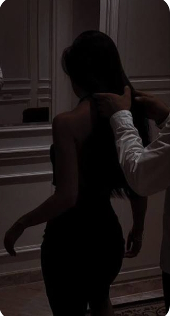
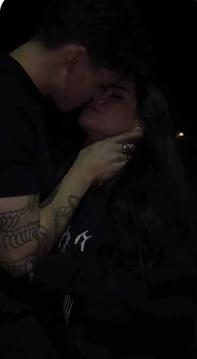
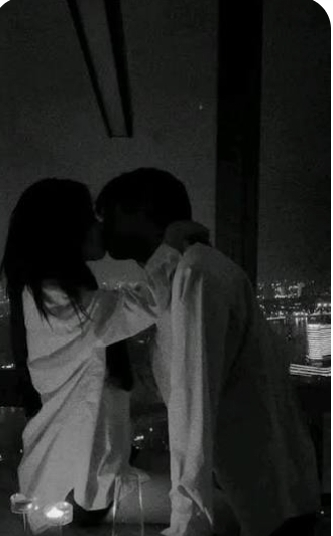
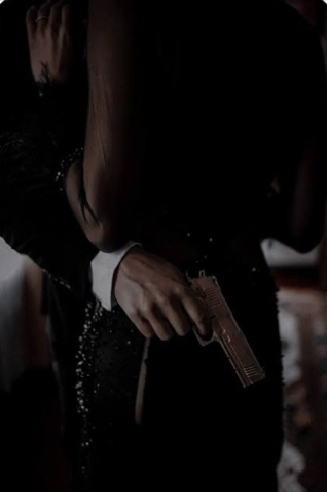

Forever Begins Here
Every heartbeat, every memory, every promise... preserved beyond time.
Play Music
The letter is sealed with a secret...
✉ The Secret Letter
"For the one my heart recognized long before my eyes ever did..."
There are moments in life that arrive without warning.
They do not knock. They do not ask permission. They simply appear... and quietly change everything.
Meeting you was never the loud kind of miracle people write about. It was not fireworks falling from the sky. It was not destiny shouting my name. It was something gentler. Something quieter. Like finding warmth after believing winter would never end.
Before you, I had learned to carry my heart carefully. To smile even when I was tired. To laugh while hiding storms no one could see. I believed some parts of me would forever remain misunderstood.
Then somehow... without trying... without asking... without even realizing it... you understood them.
You saw the pieces of me that I had forgotten deserved to be loved. Not the perfect parts. Not the strongest parts. But the frightened ones. The stubborn ones. The broken ones. And somehow... you never turned away.
People often say love changes someone. I do not think that is true. I think real love reminds someone who they were before life convinced them to become someone else. You reminded me.
You reminded me that I could trust again. That I could dream again. That silence could feel peaceful instead of lonely. That home is sometimes not a place... but a person.
There will be days when life becomes difficult. Days when distance feels longer. When words fail us. When misunderstandings cast temporary shadows. When the world asks more from us than we think we can give.
If those days ever come... read this letter again. Remember this moment. Remember that before anything else... before promises... before forever... before dreams... there were simply two imperfect souls choosing each other. Again. And again. And again.
If one day my voice cannot reach you... let these words do what I cannot. If one day doubt ever visits your heart... remember that someone, somewhere, is still choosing you. Not because you are flawless. But because you are you. And somehow... that has always been enough.
If there is another lifetime after this one... I hope we still find each other. Not because destiny owes us anything. But because loving you has become the most beautiful way I know how to exist.
Until every star grows quiet... Until every ocean forgets its waves... Until time itself finally rests... I will always be grateful... that my story found yours.
The Memory Garden
Where every moment lives forever...

Our Beginning
Suddenly, Some People Feel Like Home
Moment Whispered, Not Spoken

To The Very End, You Held Me
Instance Touch, Feeling Hot, To Ever I Belong

Moments That Stay
Forever Memories
Till My Love Became My Obsession

And My Obsession, My Protector
Our Wish
Beneath the same moon that watches over us...
There is only one wish I have never stopped making.
Not for endless wealth. Not for perfect days. Not for a life without storms. Because storms teach us how tightly two hands can hold each other.
My wish is simpler.
May we always remain two people who never stop choosing kindness before pride. May laughter always find us after tears. May forgiveness arrive before silence grows too heavy. May every disagreement become another reason to understand rather than another excuse to walk away.
I hope our home is never measured by walls, but by the peace we create inside them. I hope our mornings begin with gratitude. Our evenings end with comfort. And every ordinary day quietly becomes another unforgettable memory.
May our dreams grow together instead of apart. May our fears become lighter because they are carried by two hearts instead of one.
If life ever asks us to wait... may we wait together. If life asks us to fight... may we stand side by side. If life blesses us... may we remain humble enough to remember where we started.
And if one day our hair turns silver... our hands become slower... and our footsteps quieter... I hope we still look at each other exactly as we do now. With wonder. With gratitude. With the silent certainty that among billions of people in this endless universe... our hearts somehow found their way home.
That... is all I have ever wished for.
Our Promise
Words that will outlive time...
Today, beneath the same moon that has quietly watched every chapter of our story, I make these promises—not because love demands them, but because my heart chooses them.
I promise to love you not only on the easy days, but also on the days when life feels uncertain and our strength is tested.
I promise to celebrate your victories as if they were my own, and to stand beside you through every disappointment without ever making you face it alone.
I promise to listen before I speak, to understand before I judge, and to remember that every heart carries battles invisible to the world.
I promise to protect the little things that make us us: the laughter that appears for no reason, the quiet moments where words are unnecessary, the dreams we whisper late at night, and the memories we create without realizing they will one day become treasures.
When distance separates us, I promise that my loyalty will never measure itself in miles. When time changes us, I promise to keep discovering the new versions of you with the same curiosity as the first day we met.
When fear visits, I will offer hope. When darkness arrives, I will become light where I can. When you are tired, I will remind you to rest. When you forget your worth, I will remember it for both of us.
I cannot promise a perfect life. There will be misunderstandings. There will be moments of weakness. There will be seasons we never expected.
But I promise that I will never stop choosing us over my pride, our future over temporary anger, and love over fear.
Because forever is not built in a single extraordinary moment. It is built quietly... in ordinary mornings, shared smiles, forgiven mistakes, held hands, patient hearts, and the decision to stay even when staying requires courage.
One day, every flower we admire will fade. Every season will pass. Even the brightest stars will one day grow silent.
But if love leaves behind anything eternal, I hope it is this: That somewhere in the story of the universe, two imperfect souls met, loved honestly, grew together, and proved that forever is not measured by time—but by the depth of two hearts that never stopped finding their way back to one another.
And as long as my heart remembers how to beat, it will remember your name.
Always. Forever.
"Our story does not end here...
It simply continues wherever our hearts meet."